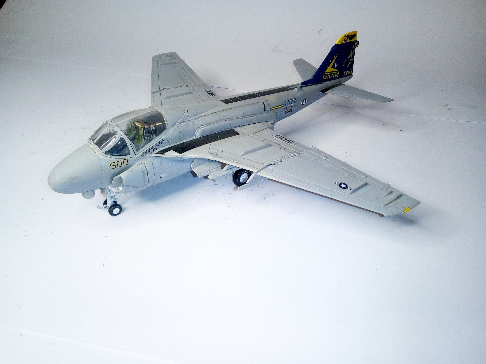

Aerei · scale model archive
Grumman A6 E TRAM Intruder
Grumman A6 E TRAM Intruder — Kit: Revell. Scakle: 1/72 VA 1151996 Eagles Carrier Air Wing 5 USS Independence accidentally shot down by Japanese destroyer…

Photo gallery
English description
Scakle: 1/72
VA 1151996 Eagles Carrier Air Wing 5 USS Independence accidentally shot down by Japanese destroyer on 4 June 1996
#1/72 #Revell
Descrizione italiana
Scakle: 1/72.
VA 1151996 Eagles Autorier Air Wing 5 USS Independence accidentally shot down by giapponese destroyer on 4 giugno 1996.